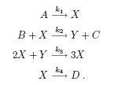
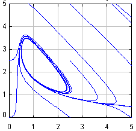

The BrusselatorThe Brusselator is a model, proposed in 1968 by R. Lefever and the Nobel Prize winner I. Prigogine, for an autocatalytic, oscillating chemical reaction. The mechanism for the reaction is given by:  |
 |
We will assume that the concentration of the reactants a=[A] and b=[B] is kept artificially constant and are interested in the evolution of the intermediate products, x = [X] and y = [Y]. This system can exhibit, for appropriate values of the parameters, unexpected oscillatory behavior. (Hint: Increase the value of k2.)
The simulation plots a set of sample trajectories in phase-space, which start from different initial conditions, for the same values of the parameters.